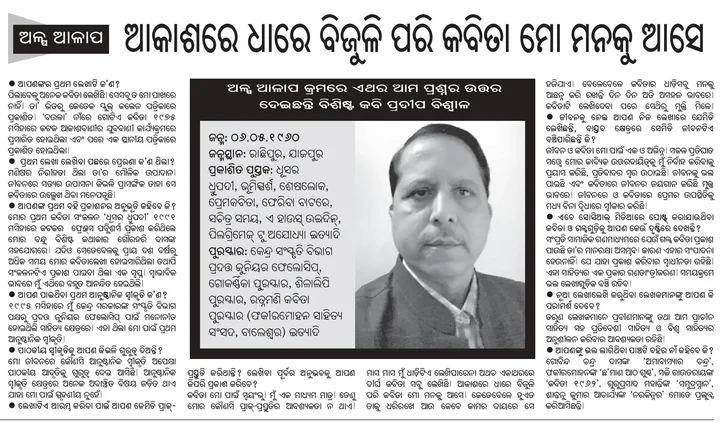
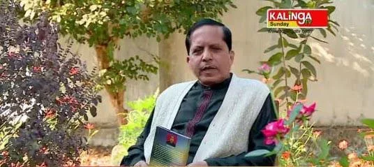
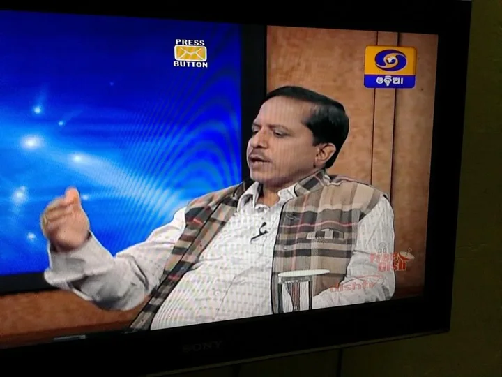

The Radio Veterans
In the eighties, All India Radio was the most popular source of entertainment, education, and information in Odisha.
Read story
Pradeep Biswal writes poetry in Odia and English. A translator and editor of Kabita Live, he brings a life in literature and public service to his writing. Read more
A Poet has no land
No borders
No barriers
Of nationality
Caste creed
And colour.


In the eighties, All India Radio was the most popular source of entertainment, education, and information in Odisha.
Read storyEver since my childhood I got addicted to newspapers.
Read storyTarun Kanti Mishra is a front-ranking fiction writer in contemporary Odia literature.
Read storyJagannath Prasad Das, more famous as JP or JP Das, is a very familiar name in not only Odia Literature but also in pan-Indian literature…
Read storyWithin ten seconds twin towers Apex and Ceyane built by the realtor major Supertech in its Emerald Court compound in sector 93A of Noida built…
Read storyDuring my growing up years, Sitakant Mohapatra was already an icon in Odia poetry. Although he happened to be a bilingual writer he chose to…
Read storyIn the early eighties, I came in contact with Dasarathi Patnaik fondly called Dasia Aja in a literary event. In those days he was a…
Read storyIn the year 1979, I got admitted to Vanivihar for my post-graduation studies. It was one of my first priorities to meet Shri Santanu Acharya,…
Read story
Print interviewOdia newspaper interviewView full image
Television interviewKalinga TVView full image
Television appearanceDoordarshan OdiaView full image View all interviewsSimple on the surface, Pradeep Biswal's poems are actually serious observations on the complex realities of human life. As we read on through the lines, his poems open up layer by layer to reveal the manifold facades of life. His poems are sincere efforts to discover the invisible house within the visible one.
Simple on the surface, Pradeep Biswal's poems are actually serious observations on the complex realities of human life. As we read on through the lines, his poems open up layer by layer to reveal the manifold facades of life. His poems are sincere efforts to discover the invisible house within the visible one.
Poems of Pradeep Biswal are small capsule-like, packed with poet's feelings and emotions of varied colours and flavours. Images chosen mostly from countryside nature bear true testimony to poet's heart, which pulsates with love, nostalgia, quest and hope. In each poem, truth and beauty merge together to yield meaning and message for the reader. The master artist has demonstrated super craftsmanship in forging brilliant poems which must stand the test of time.
Pradeep Biswal's poetry fits our most persistentt locks like a perfectly made key. His poetry will ma you sit back, pause, reflect and think. His perceptive magic will make you do a deep dive and shake you p, somewhere within,After reading his poetry you will start noticing things, people, expressions and subtle shifts around you,you probably not noticed before.
Biswal's poetry is enjoyable and notable for his deft handling of words and stirring imagery, his vivid diction and wide range of themes, dealt with simplicity and precision.
Reading his poems one after the other, I felt surge of feelings each contradicting the other in his next, almost like a moment steeping low beneath earthly cover of death and darkness and next moment feeling feathered and hovering in elation in Prussian blue clouds of love and flirtation.
Biswal's Poetry is always persuasive and brilliant when they interpret memories of the incidents of the past. They are dense and vigorous in their essential lucidity of images.His poetry can bedescribed as rich and varied in expression of human passion .
Pradeep Biswal's poetry deals with love and pathos of life. Deep emotions are conveyed in simple words that soothe the heart and mind. Right from -the love of a dotting father to a fighter struggling to honour the motherland his potry sums up the poignancy of life through measured and matured words.
His poems, which are built of unadorned language and engaging imagery, have a stunning clarity. Readers are always drawn to his poems by their quality of confiding intimacy and adroit metaphors. Poems often come to him naturally and to read him is a rewarding experience!
Honest, endearing, and subtly profound in its bearings, these poems carry the reader to quiet places of the heart where memory is precious and nostalgia turns priceless, where time becomes a phosphorescent returning dream.
The poems in this collection are minimal, possessing a deceptive lightness that strikes the reader immediately. The overall arc of the book is deeply meditative, featuring an existential probe into the momentary nature of life.
What distinguishes Biswal’s poetry is not merely the breadth of themes he engages with, but the sincerity and accessibility with which he renders them. His verse does not seek to overwhelm through complexity; rather, it invites the reader into a quiet dialogue with the self.
The poems are such that they will stay with you for life.
Biswal writes in free verse and his style is simple, direct and unhurried. Rendezvous with Dreams, is a mirror held up to the reader with such clarity and care that the reflection looking back at them is unmistakably theirs.
Nature in Biswal’s poetry is never passive; it listens, remembers, and responds.
A wonderful book in the garden of English literature.
Pradeep Biswal’s ‘Rendezvous with Dreams’ brings the readers onto the cross section of the surreal and the physical. With 61 poems covering a wide spectrum of themes, the book is a tapestry of metaphors and images and is bound to take the readers through an enlightening and enjoyable trip through a poetic landscape so very beautifully curated.
This book is wrapped in his genius, experience, and understanding of the world. It takes the reader on a journey through the delicate nuances of life, hidden across the span of time.